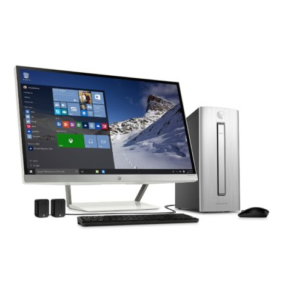
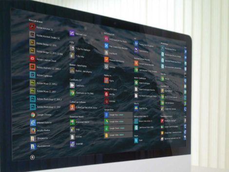
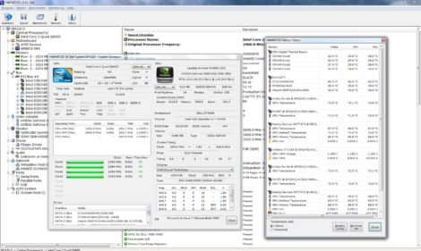

Service
PC SETUP
With PC Drills, we do more than just plug in your computer, a PC Drills tch will setup your new system so you can start
computer with efficiency and security. Our PC Drills techs can run all necessary updates,
set up free antivirus software, create accounts, and give you a personal tour of your operating system...[-]
PC Setup
#pcdrills
Service
DATA TRANSFER
Moving to a new PC or Mac is an exciting time but your documents,
music and pictures won't magically appear on your new system.
Don't worry PC Drills can transfer your existing files from your
old computer with a still working hard drive.
At this point, we can help organize your files in their correct corresponding locations...[-]
Data Transfers
#pcdrills

Service
SOFTWARE INSTALLATION
PC Drills can upgrade your existing Operating System or install a fresh new copy,
we can also install, and configure your favourite applications and make
sure to import your settings from previous versions if needed...[-]
Software Installatins
#pcdrills

Service
TROUBLESHOOTING
Are you receiving Hardware or Software errors?
Does you Operating System not boot up?
PC Drills can Troubleshoot and diagnose you system's
problems and have you back to normal in no time from the comfort of your home or office...[-]
Troubleshooting
#pcdrills
Service
WIRELESS NETWORK SETUP
PC Drills offers a verity of Network Solutions including Wireless Network Setups for your home
and Wired Network Setups for small to medium-sized companies. We also offer emergency
service prices just in case your Network goes down in the middle of your workday...[-]
Network Setup
#pcdrills
Service
INSTALLATION AND UPGRADES
Upgrading your existing computer's hardware can increase performance and even extend the life
of your system. If you are experiencing slow application use,
upgrading your system memory could allow you the multitasking power you've been looking for...[-]
Upgrades
#pcdrills